La ola que late
Las olas de tu reel, vivas: suben en capas de menta, azul rey y marino, y su filo es la línea del latido. Cada pocos segundos un pulso la recorre y el agua se levanta un poquito.


Centro de Atención Veterinaria en San Pedro. Salud, estética y nutrición en un solo lugar, con emergencias 24/7.
Tenés activado «Reducir movimiento»: ves una versión sin desplazamientos. Hoja de muestra 3 · no se publica
El azul marino de tu logo es la noche de fondo. Encima, la marea de tus videos sube, respira y su filo late como un monitor. Cuando el latido pasa sobre el botón, el botón late. Nada de la típica veterinaria blanca: es tu marca, entera, de punta a punta.
Todo sale de tu reelMovimiento vivo, nunca brusco
Tus colores, ordenados como el agua: claros arriba, hondos abajo. El menta es el único que se toca: si late, es un botón.
Huella #B4C2D6. Las huellas difuminadas y los textos de apoyo.
Emergencias 24/7.
Gabarito muy negra y en tamaño de cartel. Una palabra puede ir rellena y repetirse en contorno, como en la portada.
Salud, estética y nutrición
La misma letra para los títulos de sección.
Contamos con servicio de rayos X digitales, una herramienta fundamental para detectar fracturas, lesiones y otras condiciones que pueden afectar el bienestar de tu peludito.
Y para leer, clara sobre el marino.
Las olas de tu reel, vivas: suben en capas de menta, azul rey y marino, y su filo es la línea del latido. Cada pocos segundos un pulso la recorre y el agua se levanta un poquito.
Cuando el latido pasa junto a tu peludito, se abren aros de azul clínico, como un ultrasonido. Sale de un servicio real tuyo, no de un adorno.
Pocos, bien puestos y flotando despacio sobre el marino. Las huellas lejanas van difuminadas para dar profundidad, como agua.
Menta con letra marino y un latido que se dibuja al pasar el mouse. Siempre dice lo mismo: Agendá.
Un diagnóstico preciso es el primer paso para cuidar su salud: detectamos fracturas, lesiones y otras condiciones.

Cada peludito que nos visita tiene nombre e historia. [FOTO Y NOMBRE REAL DEL PACIENTE]